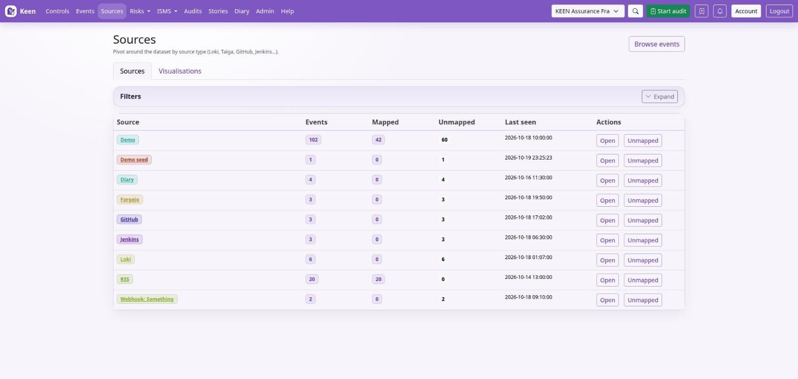

Using KEEN
Collect evidence
Chapter 3 of 16
Connect sources and collect evidence
This chapter is about getting records into KEEN. It introduces the four ways evidence arrives, walks through the one sequence every source follows (connect, collect, inspect, map), and then covers the guided API ingester builder for services without a built-in adapter. Setting up sources is administrator work; understanding where evidence comes from helps everyone who reviews it.
Evidence reaches KEEN by four routes, and each one produces ordinary events you can map to controls:
- Built-in adapters pull from services such as Loki, Jenkins, GitHub, Forgejo and RSS feeds.
- Custom API ingesters, built in the web interface, pull from any HTTPS/JSON service.
- KEEN Agent and OTLP collectors push server logs and activity.
- Webhooks accept records pushed by other systems, with a shared secret.

Diagram source (Mermaid)
flowchart TB
subgraph Collection["Choose a collection method"]
A["Built-in adapters: Loki, Jenkins, RSS and others"]
B["Guided API integrations"]
C["KEEN Agent or OTLP collector"]
D["Authenticated webhooks"]
end
A --> N["Validate, normalize and redact"]
B --> N
C --> N
D --> N
N --> E["Event and provenance in PostgreSQL"]
N --> S["Evidence artifact in local or S3 storage"]
E --> R["Mapping rules select matching events"]
S --> V["Artifact reference and SHA-256"]
V --> E
R --> F["Framework controls"]
F --> U["Review, questions and audit samples"]
Connect, collect, inspect, map
Whatever the source, the same four steps bring it into service. Do them with one small input first; widen later.


- Connect. Give KEEN access to the upstream service. Built-in adapters use credentials you save on the source; the API ingester builder uses reusable encrypted connections.
- Collect. In Admin → Sources & Evidence Mapping → Sources, define the server or account, then add the users, organisations, repositories, feeds or queries to read. For a custom API, configure and publish an ingester in the builder.
- Inspect. Run a small collection and open one event. Check its source, timestamp and payload look the way you expect.
- Map. On that event choose Create mapping from this event, pick the controls and preview the rule. A rule set to All collected events (any collection) applies across every input of the source.
Each input in the Sources list offers Add mapping rule, which opens the mapping editor with that source and input already selected.
Forgejo, as a worked example. Start with a User collection and your account login, an Organisation collection and its login, or a Feed collection and its URL. The token decides which repositories KEEN can read. Forgejo setup lists the settings and lookback.
Bring a connector into service
A careful first rollout saves time later. This is the checklist administrators follow for a new adapter.

- Choose one adapter and one small upstream input. Confirm outbound connectivity and TLS validation from the runtime, and grant a dedicated upstream identity access to that input only.
- Set the adapter’s enable flag and connection credentials in the server environment, then restart the affected services according to your deployment process.
- Create the collection input and evidence definition in Admin → Sources & Evidence Mapping, and run the adapter from Admin → Imports & adapters.
- Open the resulting event and artefact. Verify timestamp, source, system, actor, action, outcome and collection identity. A run that returns zero events may simply have found no new data.
- Preview the definition against one positive and one negative example. Confirm the intended controls exist in the chosen framework and that other inputs cannot match by accident.
- Enable routine scheduling and watch the next run. Note the expected lookback, the upstream quota and what a failure looks like.
Adapter-specific settings for Loki, CloudWatch Logs, GitHub, Forgejo, Jenkins, Taiga, BookStack, RSS and Google Workspace are in Administering KEEN. A query or job you can run in a browser does not by itself give the collector access; grant it explicit permission to read, for example, the intended CloudWatch log groups.
Going deeper: repairing a collection cursor
A cursor records where collection last stopped. Before repairing one, stop concurrent collection, record the current cursor and back up the database. Rewinding can process records twice; advancing can skip history. Resume with a bounded run and verify timestamps and counts. Each adapter keeps its own cursor format, so there is no single reset command to apply across adapters.
Know which configuration is authoritative
Most configuration lives in the web interface and in PostgreSQL. Framework metadata and nodes, evidence definitions and managed collection documents are edited in the web editors, and the database keeps their revisions. Keep bootstrap files as recovery material, and back up the database to keep current edits.

Some settings stay server-side: specialist-adapter credentials, adapter enablement and deployment settings. The API ingester builder stores reusable connection credentials encrypted in PostgreSQL, while its destination policy and encryption key are deployment settings.
Keep secrets out of content. Use least-privilege accounts and source-specific credentials, and keep secrets out of definition JSON, framework descriptions, uploaded sample records and operator logs. A version conflict when saving means someone else saved first: reload, compare and save again.
Going deeper: the Mitigator vocabulary file
The Mitigator’s deterministic vocabulary is a separate YAML file, config/risk_mitigator.yml, cached per API process; restart API processes after changing it. Library entries and control text are read from the database at analysis time, so their edits need no rebuild.
Build integrations in the web interface
Admin → Integrations is a guided builder for HTTP/JSON collectors. You add a reusable connection, choose a template or Custom JSON API, and describe the request, the records to extract, the field mappings and the schedule. Starter recipes exist for GitHub repository events, GitLab project events, Jenkins builds and BookStack page metadata. The specialist adapters stay available under Imports & adapters.
- Connect. Provide an HTTPS base URL and the authentication: none, bearer, Basic, custom header, query parameter or OAuth client credentials. Credentials are encrypted and stay on the server; a blank credential field keeps the existing secret.
- Request. Set a relative endpoint, GET or POST, query parameters and optional headers or body. Use read or search endpoints: a POST preview still calls the upstream service.
- Evidence. Point at the JSON array with a pointer such as
/results. Map a stableid, a timezone-awaretimestampand asummary. Actor, system, action, outcome, severity and source URL are optional. Constants and bounded transforms are available; no scripts run. - Schedule. Choose single response, page, offset, cursor, next-URL or Link-header pagination, with parameter names, page size and interval. Optional incremental collection sends an ISO timestamp in the configured since parameter.
- Test. Save a draft and preview its first page (up to ten records). The preview shows normalised evidence and framework matches without storing anything or moving the cursor. You can also paste sample JSON to test field extraction without a network request.
- Publish. Publish and schedule the draft. Later edits stay draft-only until you publish again. Configure recognition and framework targets for the collector in Sources & Evidence Mapping.
Going deeper: related detail requests and sample previews
A collector can fetch up to three same-connection JSON objects per record. A path such as /jobs/{/id} takes a URL-encoded record field, and a detail named job appears under /_related/job, which supports bounded list-then-detail sequences. Sample-JSON previews skip framework regex rules; use the background Test draft action to check rule matching within the worker’s time limits. Exported definitions contain configuration only, never credentials.
Operate and recover integrations
Once an ingester is published it runs on its schedule, one job at a time. If a scheduled run fails it is tried again at the next interval; after three failed runs it pauses until someone resumes it. Before resuming, look at the last error, the worker and broker health, and the connection.
Evidence is stored as it arrives, and the cursor advances only after a successful full run. A retry deduplicates stable record IDs and completes missing measurements, so an interrupted run does not leave gaps or duplicates.
Going deeper: deployment settings and limits
The deployment administrator sets KEEN_INTEGRATION_ALLOWED_HOSTS (comma-separated hosts; a bare hostname permits HTTPS port 443, and host:port permits an explicit port), optional KEEN_INTEGRATION_PRIVATE_CIDRS for approved private HTTPS services, and a persistent KEEN_INTEGRATION_SECRET_KEY on both API and worker. Generate the key once with python -c 'from cryptography.fernet import Fernet; print(Fernet.generate_key().decode())', keep it separately from database backups, and never regenerate it at startup. An empty host list denies all outbound builder requests; sample previews still work.
Requests validate TLS and pinned DNS addresses, refuse redirects and keep pagination on the connection’s origin. Loopback, link-local and reserved addresses are prohibited. Defaults are 20 pages and 2,000 records; hard limits are 100 pages, 10,000 records, 4 MiB per response, 16 MiB combined and 100 requests including related details. A breached limit fails the run and keeps the old cursor so the next attempt resumes from the same place. Beat marks jobs that have not finished within ten minutes as failed. Pausing stops future schedules without cancelling a job already queued or running.
Going deeper: revisions, rollback, export and source identity
Published revision history lets you restore an earlier definition. Connection credentials and URLs use the current shared configuration across revisions. Rollback keeps the cursor; resetting it is a separate, explicit replay action, and neither is allowed during a queued or running job. Export and import use versioned JSON without credentials; after importing, choose a local connection and reassign local measurement IDs.
Repeated upstream IDs are deduplicated, so use revision-specific IDs where versions matter. An integration’s source identity differs from a specialist adapter’s, so recreate equivalent rules before replacing an adapter, and avoid collecting the same records through both.
Collect measured effectiveness evidence
An ingester can also feed an effectiveness measure. In the builder, expand Collect effectiveness measurements and select Evidence and a measured value. Choose an existing measure, use its exact unit, and map value, period_start and period_end (as YYYY-MM-DD) alongside the usual evidence fields.
KEEN compares each reported value with the measure’s threshold, and every observation links back to its source event with the collector’s revision and run. Before relying on the automation, inspect the measure’s observations and a passing and a failing example.
Going deeper: values, units and repeat periods
The value must be finite and the period ordered correctly. Supply values in the measure’s unit and calculate aggregate percentages before submitting them, or use KEEN’s own calculation workflow. Reuse a stable observation ID when you collect the same reporting period again.
Collect server evidence with KEEN Agent
An administrator registers a server in Admin → Integrations → Manage agents, installs the agent with its own credential and selects the logs it may send. Examples of what arrives: package changes, PHP errors, HTTP requests and Linux Audit events.
In Events, filter by the KEEN Agent source. The system is the registered server name. Each event shows the activity, result, the original redacted message and the parsed fields. Queue and source health appear in Manage agents; a growing queue or stale contact needs a look. Installation and troubleshooting are in Administering KEEN.
Remove a custom API ingester or connection
In the API ingester builder, choose Delete ingester on an ingester card, or Delete connection beside a saved connection. Review the affected items and type the displayed name to confirm. Deleting a connection also removes its ingesters; deleting one ingester keeps the connection for reuse. Collected evidence stays available either way. Deletion details cover rules, mappings and run history.
Set up a source connection
Three words recur in the Sources screen. A source type is an adapter, such as Loki, GitLab or Forgejo. A connection is one endpoint or account with its credentials. Inputs choose what to collect through that connection: queries, projects, users or feed URLs.
- Open Sources & Evidence Mapping → Sources and choose Define a source. Only source types enabled in the deployment are offered.
- Enter a name, endpoint and credentials, and save.
- Choose Add input to pick a user, organisation, repository, query or other supported input.
- Choose Add mapping rule on the input to connect its evidence to controls.
Use Edit source to change an address or credentials. Events show which connection captured them, and deleting a connection keeps its collected evidence and recorded identity.
Going deeper: rules that span connections
When you create a mapping rule, choose either all connections of the source type or one named connection, then the inputs. All connections includes connections added later.
RSS: one source per feed
Choose Define a source → RSS, enter a name, the full feed URL and any optional authentication or headers, and save. Saving configures the feed; there is no separate input step. Then use Collect now to fetch evidence or Add mapping rule to link it to controls.
Each feed keeps its own credentials and collection progress, and credentials are sent only to the feed server’s origin. For another feed, create another RSS source. File-managed sources and older sources that hold several feeds keep their configured inputs.